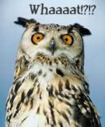
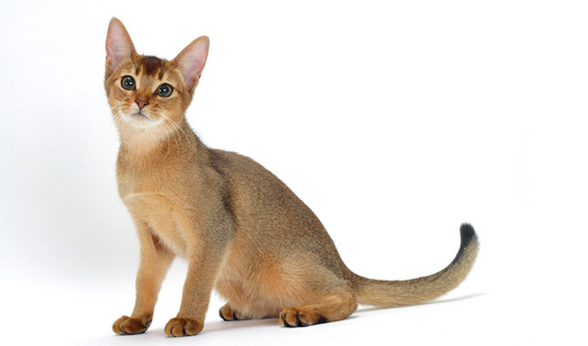
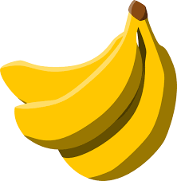

• Charles Darwin was curious about nature so when he saw strange animals, he often wondered what they would taste like and ate them!!!
• Inside some whales and dolphins are small bones that show they once had back legs and that their ancestors walked on land. These occasionally reappear as tiny rear flippers.
• Cats are more like us than you'd think. A 2007 study found that about 90% of the genes in the Abyssinian domestic cat are similar to humans!
• Humans share 50% DNA with bananas!!!
